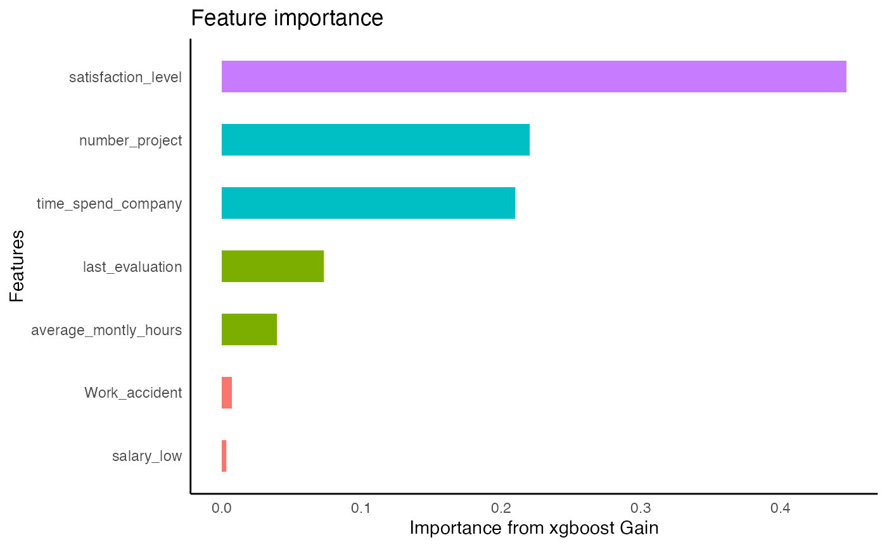
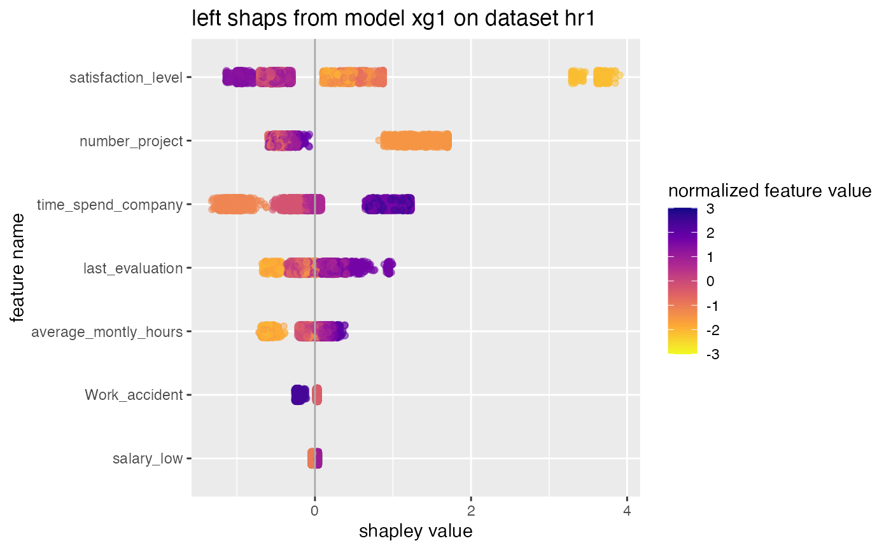

Inference with xgboost
Source:vignettes/articles/Inference-with-xgboost.Rmd
Inference-with-xgboost.RmdThis article contains a workflow in R to analyze a data set using xgboost to get insights that can help a consultant make important business decisions.
knitr::opts_chunk$set(warning = FALSE, message = FALSE)
library(pacman)
library(tidyverse); library(EIX); library(validata); p_load(TidyConsultant)
set.seed(1)Inspect data set
We will use the HR_data from the EIX package. Let’s inspect the variables using the validata package.
HR_data
#> satisfaction_level last_evaluation number_project average_montly_hours
#> 1: 0.38 0.53 2 157
#> 2: 0.80 0.86 5 262
#> 3: 0.11 0.88 7 272
#> 4: 0.72 0.87 5 223
#> 5: 0.37 0.52 2 159
#> ---
#> 14995: 0.40 0.57 2 151
#> 14996: 0.37 0.48 2 160
#> 14997: 0.37 0.53 2 143
#> 14998: 0.11 0.96 6 280
#> 14999: 0.37 0.52 2 158
#> time_spend_company Work_accident left promotion_last_5years sales
#> 1: 3 0 1 0 sales
#> 2: 6 0 1 0 sales
#> 3: 4 0 1 0 sales
#> 4: 5 0 1 0 sales
#> 5: 3 0 1 0 sales
#> ---
#> 14995: 3 0 1 0 support
#> 14996: 3 0 1 0 support
#> 14997: 3 0 1 0 support
#> 14998: 4 0 1 0 support
#> 14999: 3 0 1 0 support
#> salary
#> 1: low
#> 2: medium
#> 3: medium
#> 4: low
#> 5: low
#> ---
#> 14995: low
#> 14996: low
#> 14997: low
#> 14998: low
#> 14999: low
HR_data %>%
diagnose_category(max_distinct = 100)
#> # A tibble: 13 × 4
#> column level n ratio
#> <chr> <fct> <int> <dbl>
#> 1 sales sales 4140 0.276
#> 2 sales technical 2720 0.181
#> 3 sales support 2229 0.149
#> 4 sales IT 1227 0.0818
#> 5 sales product_mng 902 0.0601
#> 6 sales marketing 858 0.0572
#> 7 sales RandD 787 0.0525
#> 8 sales accounting 767 0.0511
#> 9 sales hr 739 0.0493
#> 10 sales management 630 0.0420
#> 11 salary low 7316 0.488
#> 12 salary medium 6446 0.430
#> 13 salary high 1237 0.0825
HR_data %>%
diagnose_numeric()
#> # A tibble: 8 × 11
#> variables zeros minus infs min mean max |x|<1…¹ integ…² mode mode_…³
#> <chr> <int> <int> <int> <dbl> <dbl> <int> <dbl> <dbl> <dbl> <dbl>
#> 1 satisfac… 0 0 0 0.09 6.13e-1 1 0.993 0.00740 0.1 0.0239
#> 2 last_eva… 0 0 0 0.36 7.16e-1 1 0.981 0.0189 0.55 0.0239
#> 3 number_p… 0 0 0 2 3.80e+0 7 0 1 4 0.291
#> 4 average_… 0 0 0 96 2.01e+2 310 0 1 135 0.0102
#> 5 time_spe… 0 0 0 2 3.50e+0 10 0 1 3 0.430
#> 6 Work_acc… 12830 0 0 0 1.45e-1 1 0.855 1 0 0.855
#> 7 left 11428 0 0 0 2.38e-1 1 0.762 1 0 0.762
#> 8 promotio… 14680 0 0 0 2.13e-2 1 0.979 1 0 0.979
#> # … with abbreviated variable names ¹`|x|<1 (ratio)`, ²integer_ratio,
#> # ³mode_ratioxgboost binary classification model
Create dummy variables out of the Sales and Salary column. We will
predict whether an employee left the company using xgboost. For this
reason, set left = 1 to the first level of the factor, so
it will be treated as the event class. A high predicted indicates a
label of the event class.
HR_data %>%
framecleaner::create_dummies() %>%
framecleaner::set_fct(left, first_level = "1") -> hr1Create the model using xgboost. Since the goal of this model is to run inference using trees, we want to set tree_depth to 2 to make easily-interpretable trees.
When the model is run, feature importance on the full data is printed. Also the data is split into train and test, where the accuracy is calculated on a test set. Since this is a binary classification problem, a confusion matrix is output along with binary metrics.
hr1 %>%
tidy_formula(left) -> hrf
hr1 %>%
tidy_xgboost(hrf, tree_depth = 2L, trees = 100L, mtry = .75) -> xg1
#> # A tibble: 15 × 3
#> .metric .estimate .formula
#> <chr> <dbl> <chr>
#> 1 accuracy 0.975 TP + TN / total
#> 2 kap 0.930 NA
#> 3 sens 0.931 TP / actually P
#> 4 spec 0.989 TN / actually N
#> 5 ppv 0.963 TP / predicted P
#> 6 npv 0.978 TN / predicted N
#> 7 mcc 0.930 NA
#> 8 j_index 0.920 NA
#> 9 bal_accuracy 0.960 sens + spec / 2
#> 10 detection_prevalence 0.231 predicted P / total
#> 11 precision 0.963 PPV, 1-FDR
#> 12 recall 0.931 sens, TPR
#> 13 f_meas 0.947 HM(ppv, sens)
#> 14 baseline_accuracy 0.761 majority class / total
#> 15 roc_auc 0.987 NA
This line will save the tree structure of the model as a table.
xg1 %>%
xgboost::xgb.model.dt.tree(model = .) -> xg_trees
xg_trees
#> Tree Node ID Feature Split Yes No Missing Quality
#> 1: 0 0 0-0 satisfaction_level 0.465 0-1 0-2 0-1 3123.25146000
#> 2: 0 1 0-1 number_project 2.500 0-3 0-4 0-3 892.94714400
#> 3: 0 2 0-2 time_spend_company 4.500 0-5 0-6 0-5 1284.82617000
#> 4: 0 3 0-3 Leaf NA <NA> <NA> <NA> 0.45360827
#> 5: 0 4 0-4 Leaf NA <NA> <NA> <NA> -0.10822086
#> ---
#> 614: 99 2 99-2 number_project 2.500 99-5 99-6 99-5 28.99409870
#> 615: 99 3 99-3 Leaf NA <NA> <NA> <NA> 0.07221178
#> 616: 99 4 99-4 Leaf NA <NA> <NA> <NA> -0.13327244
#> 617: 99 5 99-5 Leaf NA <NA> <NA> <NA> -0.26394776
#> 618: 99 6 99-6 Leaf NA <NA> <NA> <NA> 0.05643456
#> Cover
#> 1: 3749.75000
#> 2: 1045.75000
#> 3: 2704.00000
#> 4: 435.50000
#> 5: 610.25000
#> ---
#> 614: 256.00961
#> 615: 110.06954
#> 616: 101.18491
#> 617: 27.59598
#> 618: 228.41362Let’s plot the first tree and interpret the table output. For tree=0, the root feature (node=0) is satisfaction level, which is split at value .465. Is satisfaction_level < .465? If Yes, observations go left to node 1, if no, observations go right to node 2. Na values would go to node 1 if present. The quality of the split is represented by its Gain: 3123, the improvement in training loss.
xgboost::xgb.plot.tree(model = xg1, trees = 0)The quality in the leaves is the prediction for observations in those leaves represented by log odds. To interpret them as probabilities, use the function below. Importantly, a log odds of 0 is a 0.5 probability.
sigmoid curve: logit function
Analyze interactions
In xgboost, an interaction occurs when the downstream split has a higher gain than the upstream split.
# write the function collapse_tree to convert the tree output to interactions that occur in the tree.
collapse_tree <- function(t1){
t1 %>% group_by(Tree) %>% slice(which(Node == 0)) %>% ungroup %>%
select(Tree, Root_Feature = Feature) %>%
bind_cols(
t1 %>% group_by(Tree) %>% slice(which(Node == 1)) %>% ungroup %>%
select(Child1 = Feature)
) %>%
bind_cols(
t1 %>% group_by(Tree) %>% slice(which(Node == 2)) %>% ungroup %>%
select(Child2 = Feature)
) %>%
unite(col = "interaction1", Root_Feature, Child1, sep = ":", remove = F) %>%
select(-Child1) %>%
unite(col = "interaction2", Root_Feature, Child2, sep = ":", remove = T) %>%
pivot_longer(names_to = "names", cols = matches("interaction"), values_to = "interactions") %>%
select(-names)
}
xg_trees %>%
collapse_tree -> xg_trees_interactionsfind the top interactions in the model. The interactions are rated with different importance metrics, ordered by sumGain.
imps <- EIX::importance(xg1, hr1, option = "interactions")
as_tibble(imps) %>%
set_int(where(is.numeric))
#> # A tibble: 30 × 7
#> Feature sumGain sumCo…¹ meanG…² meanC…³ frequ…⁴ mean5…⁵
#> <chr> <int> <int> <int> <int> <int> <int>
#> 1 time_spend_company:satisfact… 1941 4734 485 1184 4 485
#> 2 average_montly_hours:number_… 1666 5943 333 1189 5 333
#> 3 last_evaluation:number_proje… 923 3498 461 1749 2 461
#> 4 satisfaction_level:last_eval… 865 3240 288 1080 3 288
#> 5 last_evaluation:average_mont… 784 1692 392 846 2 392
#> 6 satisfaction_level:time_spen… 645 2703 107 450 6 128
#> 7 average_montly_hours:time_sp… 332 2170 55 361 6 64
#> 8 last_evaluation:time_spend_c… 262 494 262 494 1 262
#> 9 average_montly_hours:last_ev… 259 1294 64 323 4 64
#> 10 average_montly_hours:satisfa… 245 1457 61 364 4 61
#> # … with 20 more rows, and abbreviated variable names ¹sumCover, ²meanGain,
#> # ³meanCover, ⁴frequency, ⁵mean5Gain
#> # ℹ Use `print(n = ...)` to see more rowsWe can extract all the trees that contain the specified interaction.
imps[1,1] %>% unlist -> top_interaction
xg_trees_interactions %>%
filter(str_detect(interactions, top_interaction)) %>%
distinct -> top_interaction_trees
top_interaction_trees
#> # A tibble: 6 × 2
#> Tree interactions
#> <int> <chr>
#> 1 2 time_spend_company:satisfaction_level
#> 2 7 time_spend_company:satisfaction_level
#> 3 15 time_spend_company:satisfaction_level
#> 4 28 time_spend_company:satisfaction_level
#> 5 30 time_spend_company:satisfaction_level
#> 6 99 time_spend_company:satisfaction_levelThen extract the first 3 (most important) trees and print them.
top_interaction_trees$Tree %>% unique %>% head(3) -> trees_index
xgboost::xgb.plot.tree(model = xg1, trees = trees_index)We can confirm they are interactions because the child leaf in the interaction has higher split gain than the root leaf.
Analyze single features
# EIX package gives more detailed importances than the standard xgboost package
imps_single <- EIX::importance(xg1, hr1, option = "variables")
# choose the top feature
imps_single[1, 1] %>% unlist -> feature1
# get the top 3 rees of the most important feature. Less complicated than with interactions so
# no need to write a separate function like collapse tree
xg_trees %>%
group_by(Tree) %>%
slice(which(Node == 0)) %>%
ungroup %>%
filter(Feature %>% str_detect(feature1)) %>%
distinct(Tree) %>%
slice(1:3) %>%
unlist -> top_trees
xgboost::xgb.plot.tree(model = xg1, trees = top_trees)By looking at the 3 most important splits for satisfaction_level we can get a sense of how its splits affect the outcome.
shapley values
xg1 %>%
tidy_shap(hr1, form = hrf) -> hr_shaps
hr_shaps
#> $shap_tbl
#> # A tibble: 14,999 × 20
#> satisfactio…¹ last_…² numbe…³ avera…⁴ time_…⁵ Work_…⁶ promo…⁷ sales…⁸ sales…⁹
#> <dbl> <dbl> <dbl> <dbl> <dbl> <dbl> <dbl> <dbl> <dbl>
#> 1 1.91 0.420 1.32 0.984 -0.0731 0.113 0 0 0
#> 2 0.287 0.535 0.183 0.613 1.65 0.102 0 0 0
#> 3 5.51 0.248 3.76 0.128 0.113 0.0406 0 0 0
#> 4 0.194 0.535 0.0280 0.349 2.17 0.107 0 0 0
#> 5 1.91 0.420 1.32 0.984 -0.0731 0.113 0 0 0
#> 6 1.91 0.420 1.32 0.984 -0.0731 0.113 0 0 0
#> 7 6.62 -0.703 0.0543 0.0173 0.0558 0.0458 0 0 0
#> 8 -0.154 0.538 0.146 0.623 2.29 0.107 0 0 0
#> 9 0.199 2.21 0.0567 0.369 2.26 0.104 0 0 0
#> 10 1.91 0.420 1.32 0.984 -0.0731 0.113 0 0 0
#> # … with 14,989 more rows, 11 more variables: sales_IT <dbl>,
#> # sales_management <dbl>, sales_marketing <dbl>, sales_product_mng <dbl>,
#> # sales_RandD <dbl>, sales_sales <dbl>, sales_support <dbl>,
#> # sales_technical <dbl>, salary_high <dbl>, salary_low <dbl>,
#> # salary_medium <dbl>, and abbreviated variable names ¹satisfaction_level,
#> # ²last_evaluation, ³number_project, ⁴average_montly_hours,
#> # ⁵time_spend_company, ⁶Work_accident, ⁷promotion_last_5years, …
#> # ℹ Use `print(n = ...)` to see more rows, and `colnames()` to see all variable names
#>
#> $shap_summary
#> # A tibble: 20 × 5
#> name cor var sum sum_abs
#> <chr> <dbl> <dbl> <dbl> <dbl>
#> 1 satisfaction_level -0.668 4.76 -5354. 23838.
#> 2 time_spend_company 0.328 1.22 -7864. 14622.
#> 3 average_montly_hours 0.348 1.52 -183. 10695.
#> 4 number_project 0.0409 0.690 -1867. 9367.
#> 5 last_evaluation 0.391 0.733 -3603. 8745.
#> 6 Work_accident -0.989 0.109 -495. 3090.
#> 7 salary_low 0.995 0.0421 -195. 3064.
#> 8 salary_high -0.987 0.0429 -263. 1468.
#> 9 sales_product_mng -0.963 0.00691 47.3 613.
#> 10 sales_technical 0.894 0.00123 -15.6 372.
#> 11 sales_RandD -0.967 0.00268 -0.303 335.
#> 12 sales_IT -0.992 0.000708 -3.97 214.
#> 13 salary_medium 0.410 0.000412 -12.5 125.
#> 14 promotion_last_5years NA 0 0 0
#> 15 sales_accounting NA 0 0 0
#> 16 sales_hr NA 0 0 0
#> 17 sales_management NA 0 0 0
#> 18 sales_marketing NA 0 0 0
#> 19 sales_sales NA 0 0 0
#> 20 sales_support NA 0 0 0
#>
#> $swarmplot
#>
#> $scatterplots
#>
#> $boxplots